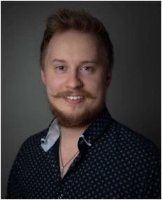
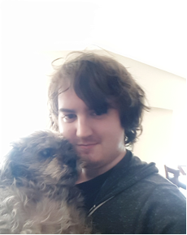

As the project’s sponsor, Kimberlee Klein, comes from a background in spiritual healing and helping people overcome grief in times of need, the potential for an application to address further needs for more people seemed like a natural step. By providing an accessible application to connect those in need of healing services, a face-to-face or online healing session can easily be arranged. Through Woo-Woo Network, people can get the help they want and need, and on the business end, healers can rest easy knowing that they will be paid for the work that they do.
With years of experience in grief counseling and spiritual healing for mothers experiencing child loss, Kimberlee Klein hopes to bring those necessary healing services to others and expand the types of support that people in need can receive. Her latest project, Woo-Woo Network, hopes to achieve this by providing a simple tool that will allow users worldwide access to local healers and their services, and help build relationships between them.
Woo-Woo Network aims to help people worldwide by providing spiritual healing services to those in need. The project team aims to provide a simple and intuitive interface that will allow prospective users to access the healer network as a client or a healer and find services that best fit their needs. As a two-person team, navigating challenges is as easy as a short discussion over what might be the best decision. To simplify the division of work, the project team settled on taking on the roles that best suited their interests. As such, Tyler will be handling the front-end and styling, and Steven will be handling the back-end and middleware. This balance should provide simplified communication and refine the development process.

Steven has always had an interest in technology and a desire to improve on the tech that surrounds him. In his free time, he can be found playing piano, gaming, or perfecting the paint work on his collection of miniatures. His interest in coding was noted by his coworkers, and he quickly pivoted from his sales and radio installation background to a position as a quality assurance tester and handling day-to-day IT duties, helping facilitate the transition to a remote office for his company during the COVID-19 pandemic. He applied for the ICS program to expand his knowledge and be better equipped to contribute to the ever-changing world around him.

Tyler is a quick learner. From a young age he's had a wish to create video games that entertain thousands. In his free time, Tyler enjoys gaming and watching video essays as well as chatting with his friends online. He started programming in middle school and took programming classes up to and after high school. Now in the ICS program, his wish is finally coming to fruition.
Steven and Tyler would like to thank Kimberlee for her ongoing support in the community by providing her services, and for the opportunity to engage in creating an application with the potential to help people all over the world. Through the ICS program, the project team hopes to put their knowledge to work in creating a well-designed and thoughtful platform. The experience gained throughout the Woo-Woo Network project so far has provided many learning opportunities, and the project team hopes to learn even more as the project progresses.